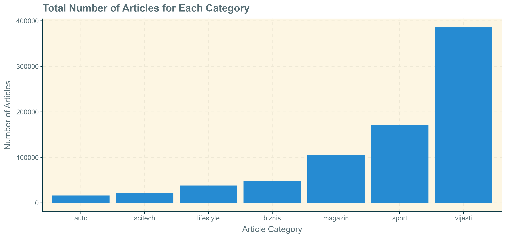
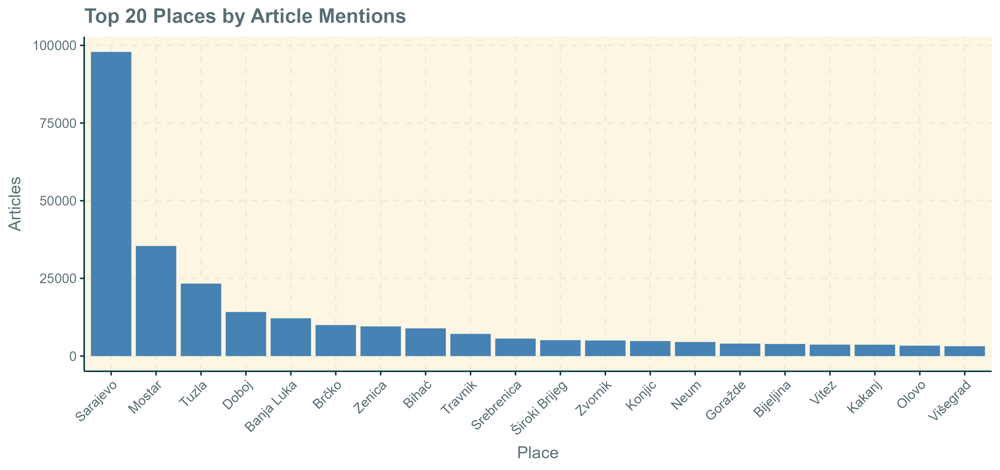
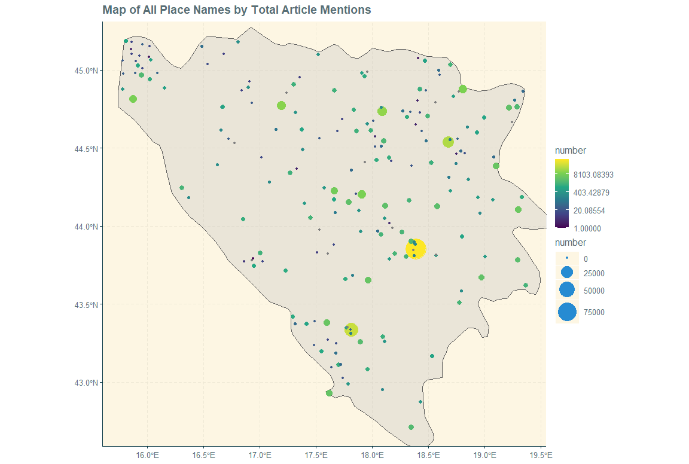
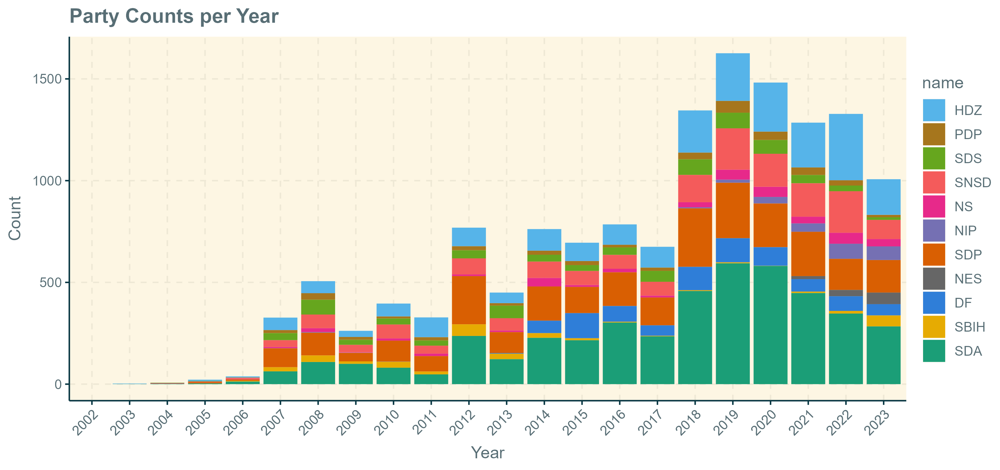
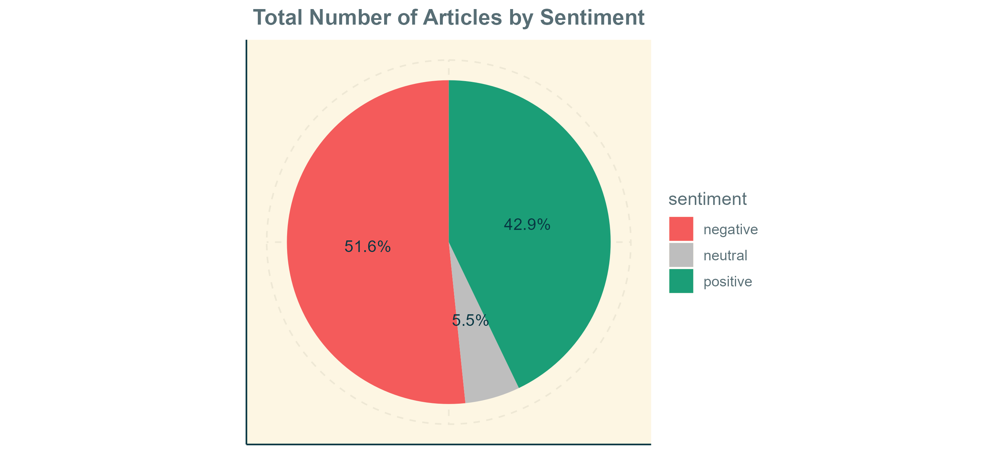

Ali Karčić
PhD Student
Political Science
Aarhus University | AU BSS | IFSK
Mapiranje Vijesti u Bosni
Septembar 2024
O čemu se radi ovaj projekat?
Više nego ikada prije, ljudi se oslanjaju na internet za dnevne vijesti i informisanje. Sa brzim širenjem pristupa internetu širom svijeta, sve više ljudi se okreće od tradicionalnih, analognih medija prema društvenim mrežama poput Twittera i Facebooka, ili velikim online platformama za vijesti. Sa obzirom da su ovi internet portali postali glavni izvor informacija za većinu populacije, oni su naravno od velikog interesa za društvene naučnike, koji žele saznati više o medijskom pejzažu i koje društvene prioritete taj pejzaž odražava.
Ovaj projekat ima za cilj iskoristiti lahko dostupne online vijesti, fokusirajući se na klix.ba, prepoznat kao najutjecajniji i najveći portal vijesti u Bosni, između ostalog i od OSCE-a u skorašnjim izvještajem. Prikupljanjem, sistematizacijom i analizom svih novinskih članaka na web stranici, želim mapirati koje vrste vijesti Bosanci citaju, kako interagiraju stim vijestima, uz nadu da će se pružiti jedinstven uvid u šire medijske trendove u zemlji. Razlog zbog čega je baš Bosna izabrana kao slucaj, jeste sto je opći napor u prikupljanju i arhiviranju novinskih članaka u velikoj mjeri izostao, što naglašava važnost takvog rada u budućnosti.
Ključna Pitanja
- Konzumacija Vijesti
Koje vrste članaka Bosanci najviše čitaju? Koji sadržaj generira najveći angažman? - Identifikacija Popularnih Tema
Koje vrste vijesti se najčešće objavljuju? Da li se fokus medija mijenjala kroz vrijeme? - Proizvodnja Vijesti kroz Vrijeme
Koje teme dominiraju medijskim pejzažom? Da li postoje sezonski skokovi ili skokovi u vezi specifičim događajima, u određenim temama? - Geografska Raspodjela Medijskog Sadržaja
Na koje geografske oblasti i lokacije se fokusira medijska agenda? Da li neki dijelovi zemlje dobijaju više pažnje nego drugi? - Pokrivanje Politike
Koje političke stranke se najčešće spominju u vijestima? Koji politički lideri dobijaju najviše pažnje? - Analiza Sentimenta
Da li su članci vijesti uglavnom pozitivni ili negativni u tonu? Da li je medijsko prokrivanje politike pristrasno u smislu sentimenta?
Izvori Podataka
Podaci su direktno preuzeti s klix.ba putem python web scraper-a, programirano pomoću BeautifulSoup-a. Analiza je zasnovana na ovim prikupljenim podacima, uz dodatnu početnu zbirku podataka koju je napravio Seferovic8. Sentiment oznake i ocjene su izračunate koristeći MoritzLaurerov zero-shot model za višejezičnu klasifikaciju. Podaci se sastoje od 786.718 članaka vijesti u periodu od decembra 2002. do avgusta 2023.
Konzumacija Vijesti i Popularne Teme
Svi članci na klix.ba su svrstani u jednu od 7 kategorija - kratak pogled na ukupan broj vijesti po kategorijama otkriva da većina članaka pripada kategoriji "Vijesti", odnosno općoj kategoriji vijesti. Iznenađujuće, kategorija "Sport" je druga najveća kategorija, i čini više od 20% svih članaka na klix.ba, što ukazuje na značajan interes za sportske vijesti. Pored kategorije "Magazin", koja obuhvata izvještavanje o kulturnim događajima i čini oko 12% svih članaka, sve druge kategorije zauzimaju mali dio prostora.
Angažman sa vijestima i popularne teme
Svi članci na klix.ba su kategorisani u jednu od 7 kategorija - kratak pregled ukupnog broja članaka po kategoriji otkriva da većina članaka spada u kategoriju "Vijesti", odnosno opšte vijesti. Iznenađujuće, kategorija "Sport" je druga po veličini i čini više od 20% svih članaka na klix.ba, što ukazuje na značajan interes za sportske vijesti. Osim kategorije "Magazin", koja uključuje vijesti o kulturnim događajima i čini oko 12% svih članaka, sve druge kategorije članaka zauzimaju ograničen prostor.
Razlaganje količine članaka kroz vrijeme otkriva iznenađujuće stabilnu distribuciju kategorija tokom većine vremenskog perioda. Kategorija vijesti čini oko 50% svih članaka u gotovo svakoj godini od 2005. do 2023. Dijagram ispod također otkriva da klix.ba objavljuje približno isti broj članaka svakog mjeseca, s izuzetkom perioda prije 2007. Također se čini da postoji blaga indikacija općeg rasta broja članaka nakon 2020. godine.

Podaci također uključuju informacije o broju komentara i broj dijeljenja za svaki članak. Ovo pruža zanimljiv uvid u angažman javnosti s novinskim člancima, ukazujući koji članci generišu veći angažman od drugih. Kao što dijagram ispod ilustruje, članci na klix.ba generisali su ograničen broj angažmana do 2013. godine, sa oko 0-20 komentara po članku. Nakon 2013. godine dolazi do značajnog porasta broja komentara, dostižući vrhunac 2019. godine, sa oko 60 komentara po članku. Izuzimajući primjetan pad oko 2020. godine, broj komentara se čini stabilizovanim oko 40 po članku. Ovo sugeriše da notorno poznati možda komentari na klix.ba nisu stvar prošlosti, ali su manje zastupljeni nego prije.

Razlaganje broja komentara po članku prema kategorijama članaka otkriva da opšta vijesti kategorija očekivano generiše najveći angažman čitatelja. Zapravo, čini se da je došlo do odstupanja u broju komentara između opšte vijesti kategorije i svih drugih kategorija oko 2014. godine. Do 2014. godine sve kategorije članaka generisale su otprilike isti broj komentara. Međutim, nakon 2014. godine, opšte vijesti se izdvajaju kao daleko najpopularnija kategorija za komentarisanje.

Geografska distribucija novinskog sadržaja
Okrećući se sada geografskoj distribuciji novinskog sadržaja, pogledao sam broj članaka koji eksplicitno spominju svaku od bivših jugoslovenskih zemalja. Kao što ta ispod pokazuje, Bosna je, ne iznenađujuće, najčešće spominjana zemlja na klix.ba, koja se pominje u skoro 135.000 članaka. Druga najpopularnija zemlja je Hrvatska, koja se spominje oko 65.000 puta, a odmah iza nje slijedi Srbija sa 61.000. Preostale četiri zemlje zauzimaju značajno manje prostora na medijskoj agendi, pri čemu je Crna Gora najmanje spominjana zemlja. Ipak, vrijedi naglasiti da uprkos tome što je klix.ba bosanski medijski portal fokusiran uglavnom na vijesti iz Bosne, znatna pažnja se i dalje posvećuje susjednim zemljama.

Zumirajući na Bosnu posebno, slično sam izračunao broj članaka koji spominju svaki grad/općinu u zemlji. Karta ispod ističe 10 najčešće spominjanih mjesta na klix.ba. Napominjem da broj uključenih gradova/općina ne predstavlja iscrpan popis svih mjesta u Bosni, posebno manjih sela. Dodatno, neki nazivi mjesta su morali biti ispravljeni zbog pogrešno uvećanih brojeva (npr. "Ključ" i "Brod").

Prikazivanje 20 najpopularnijih gradova u Bosni prema ukupnom broju spominjanja u člancima otkriva nekoliko zanimljivih zapažanja. Prvo, Sarajevo je daleko najspominjaniji grad, sa tri puta više članaka nego drugi po redu grad na spisku, te više članaka nego svi ostali gradovi zajedno. Ovo možda nije iznenađujuće s obzirom na važnost Sarajeva kao ekonomskog i političkog središta cijele zemlje. Međutim, s obzirom na relativno nizak nivo urbanizacije i političke centralizacije u Bosni, značajna medijska pažnja usmjerena na Sarajevo je i dalje upečatljiva.
Drugo, nakon Sarajeva, grad koji je dobio najviše medijske pažnje je Mostar. Ovo je donekle neočekivano, sa obzirom da je drugi najveći grad u Bosni Banja Luka, te da se tri grada blisko takmiče za treće mjesto (Zenica, Tuzla i Mostar, svi imaju oko 100.000-110.000 stanovnika). Disproporcionalno velika pažnja posvećena Mostaru može se objasniti s obzirom na 1. politički značaj grada kao centar sukoba između bosanskih Hrvata i Bošnjaka, te 2. popularnost grada kao turistička destinacija. Banja Luka, koja je tek peti najspominjaniji grad, možda naglašava relativno perifernu ulogu grada u bosanskoj politici i ekonomiji.
Na kraju, također vrijedi napomenuti da Srebrenica, uprkos tome što se nalazi na samoj periferiji zemlje i ima samo oko 13.000 stanovnika, i dalje uspijeva biti među 10 najspominjanijih mjesta. Ovo je nesumnjivo zbog historijskog značaja grada, koji je sinonim za Masakr u Srebrenici 1995. godine, i često se vidi kao brutalan vrhunac cijelog Bosanskog genocida. Kao tako, Srebrenica razumljivo dobija veliku količinu medijske pažnje, posebno tokom godišnjeg Dana sjećanja na Srebrenicu, koji se obilježava 11. jula.
Interaktivne karte
Ispod se nalaze dva interaktivna widgeta karti koja prikazuju sva spomenuta mjesta, zajedno s tačnim brojem spominjanja članaka po mjestu. Karta 1 omogućava zumiranje unutra i van, dok Karta 2 skalira oznake mjesta prema ukupnom broju.
Karta ispod prikazuje opštu geografsku distribuciju članaka preko svih pomenutih imena mjesta. Drugim riječima, karta pokazuje koja područja zemlje dobivaju najviše medijske pažnje. Čini se da je medijska pažnja uglavnom usmjerena prema središnjoj Bosni, preciznije kvadrantu Sarajevo-Tuzla-Doboj-Travnik. Ovo je daleko najnaseljenije područje u zemlji, i također ekonomski najrazvijenije izvan glavnog grada. U suprotnosti sa ovim, područja Bosne koja dobijaju najmanje medijske pokrivenosti su periferne dijelove zemlje, poput zapadne Bosne, sjeverne Bosne (osim Brčkog) i istočno-jugoistočne Bosne. Jedan važan izuzetak od ovog pravila je Krajina, tj. sjeverozapadni dio Bosne, gdje su mjesta poput Bihaća, Velike Kladuše, Cazina, Bužima i Krupe često spominjana u medijima.
Pokrivanje Politike
Kako izgleda medijsko praćenje političke scene? Sa obzirom na to da je politički sistem u Bosni notorno komplikovan, bilo bi zanimljivo vidjeti kako medijski pejzaž odražava tu kompleksnost. Osim toga, Bosna se nalazi prilično nisko na skoro svih indeksa slobode štampe, (Svjetski indeks slobode štampe), usporediva s drugim zemljama istočne Evrope, i često se iznose zabrinutosti oko pristranog izvještavanja i pristupa medijskom prostoru. U tom svjetlu, relevantno pitanje je koliko često se bosanske političke stranke spominju u novinskim člancima na klix.ba.
Dijagram ispod prikazuje broj spominjanja članaka po političkoj stranci na godišnjem nivou. Kao što grafikon pokazuje, pokrivenost političkih stranaka je značajno i konzistentno raznolika, i nijedna stranka ne predstavlja više od 50% ukupnih političkih članaka u bilo kojem trenutku. Neke stranke, međutim, privlače više medijske pažnje od drugih - SNSD, SDP i SDA se često spominju, naglašavajući njihovu ulogu kao najveće stranke u Bosni. SDA posebno prima najviše pažnje od svih stranaka, što je razumljivo s obzirom na to da SDA redovno dobiva najviše glasova od svih stranaka u Bosni. Iznenađujuće je da mnogi članci svake godine također spominju HDZ, uprkos tome što HDZ predstavlja mnogo manji segment biračkog tijela u poređenju sa SDP-om ili SNSD-om. Ovo možda odražava važan politički položaj HDZ-a kao predstavnika hrvatske manjine u Bosni.
Analiza sentimenta
Prelazeći na analizu sentimenta, važno je naglasiti da cijeli tekstualni korpus nije klasificiran u kategorije "negativno", "neutralno" i "pozitivno". Samo 55.000 članaka je prošlo kroz klasifikator, pokrivajući period od avgusta 2022. do avgusta 2023. Posmatrajući agregatnu količinu pozitivnih, negativnih i neutralnih članaka, vidimo da članci koji imaju negativan sentiment čine približno 50% svih vijesti. Uprkos široko rasprostranjenom dojmu da su vijesti neproporcionalno fokusirane na negativne događaje, kao što su politički skandali, međunarodni konflikti ili prirodne katastrofe, podaci pokazuju da vijesti nisu previše nagnute ka negativnom sadržaju.
Umjesto grubih kategorizacija negativnog i pozitivnog, diagram ispod pokazuje distribuciju članaka po ocjenama sentimenta. Sentiment-ocjene su mjera koliko se precizno članak može kategorizirati kao negativan ili pozitivan (veće brojke znače veću preciznost). Zanimljivo je da distribucija negativnih članaka ima izrazitu lijevu asimetriju, što znači da značajan dio negativnih članaka zaista ima vrlo negativan ton, u poređenju s ravnomjernijom distribucijom pozitivnih članaka. Suštinski, ima otprilike jednako pozitivnih i negativnih vijesti u medijima - ali negativne vijesti su nedvosmisleno negativne, dok su pozitivne vijesti manje izraženo pozitivne. Ovo može objasniti uobičajeni dojam da mediji favoriziraju izvještavanje o negativnim događajima.

Razlaganje broja pozitivnih i negativnih vijesti kroz vrijeme otkriva neočekivanu obzervaciju - podaci pokazuju nešto poput U-krivulje sa obzirom na omjer negativnih naspram pozitivnih vijesti. Dok je otprilike jednako pozitivnih i negativnih vijesti tokom ljeta 2022. i ljeta 2023., negativne vijesti zauzimaju veći dio medijskog prostora u kasnoj zimi i ranom proljeću 2023., sa prosjekom od 25 više negativnih nego pozitivnih članaka dnevno.

Još jedan zanimljiv pravac istraživanja jeste ispitivanje sentimenta vijesti u vezi s praćenjem političkih stranaka. Istraživanje u kojoj mjeri mediji disproporcionalno izvještavaju negativno o nekim strankama u poređenju s drugim strankama, pitanje je koje je izazvalo mnogo neslaganja na političkoj sceni u Bosni posljednjih godina. Lider stranke Narod i Pravda i trenutni ministar vanjskih poslova, Elmedin Konaković, posebno je glasno iznosio optužbe o pristranosti medija, tvrdeći da novinari sa niza online portala nepravedno ciljaju stranke vladajuće koalicije.
Da bih empirijski provjerio ovu tvrdnju, identifikovao sam sve novinske članke koji spominju svaku od šest najvećih političkih stranaka u Bosni, a zatim izračunao procenat negativnih, pozitivnih i neutralnih članaka za svaku stranku. Kao što dijagram ispod pokazuje, postoji vrlo mala varijacija u procentu negativnog medijskog praćenja među strankama. Dvije stranke, SDA i SDP, dobivaju relativno veći broj negativnih medijskih izvještaja - ovo se može pripisati njihovom statusu kao najstarijih i historijski najutjecajnijih političkih stranaka u Bosni. Sa obzirom na njihovu historiju, obje stranke imaju više političkih skandala povezanih sa svojim imenom, u poređenju sa četiri druge, novije stranke. Važno je napomenuti da nema dokaza koji bi podržali optužbe koje je iznio Konaković - NiP nije meta većeg broja negativnih izvještaja u poređenju s drugim strankama. Zapravo, oni primaju nešto manje negativne pokrivenosti od svog glavnog rivala, stranke SDA.

Direktniji test Konakovićevih tvrdnji bilo bi izračunavanje procente sentimenta grupiranjem tri glavne stranke vladajuće koalicije (kolokvijalno poznate kao Trojka) i uporediti ih s tri glavne opozicione stranke. Kao što dijagram ispod pokazuje, praktično ne postoji razlika u agregatnom sentimentu između ova dva bloka. Stranke vladajuće koalicije kolektivno dobivaju otprilike isto toliko negativnog i pozitivnog izvještavanja kao i opozicione stranke. Optužbe o široko rasprostranjenoj pristranosti medija koje je iznio Konaković ne izdržavaju kritičko ispitivanje.